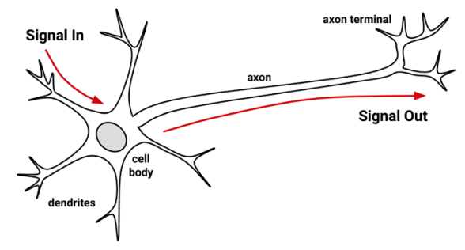
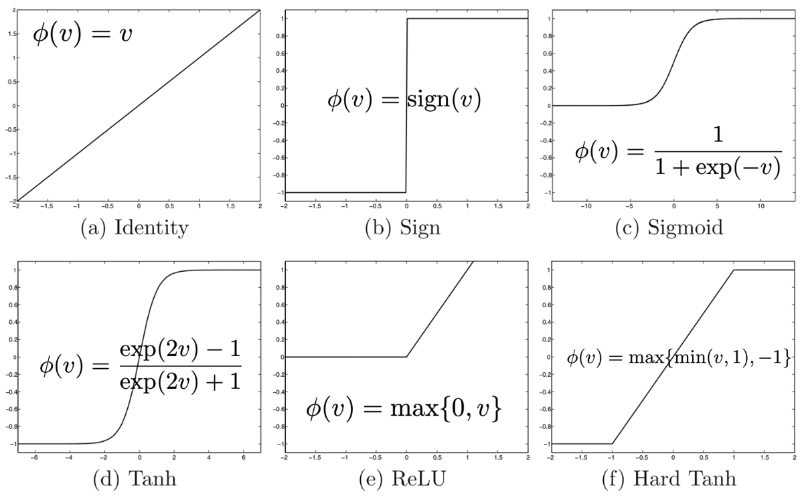
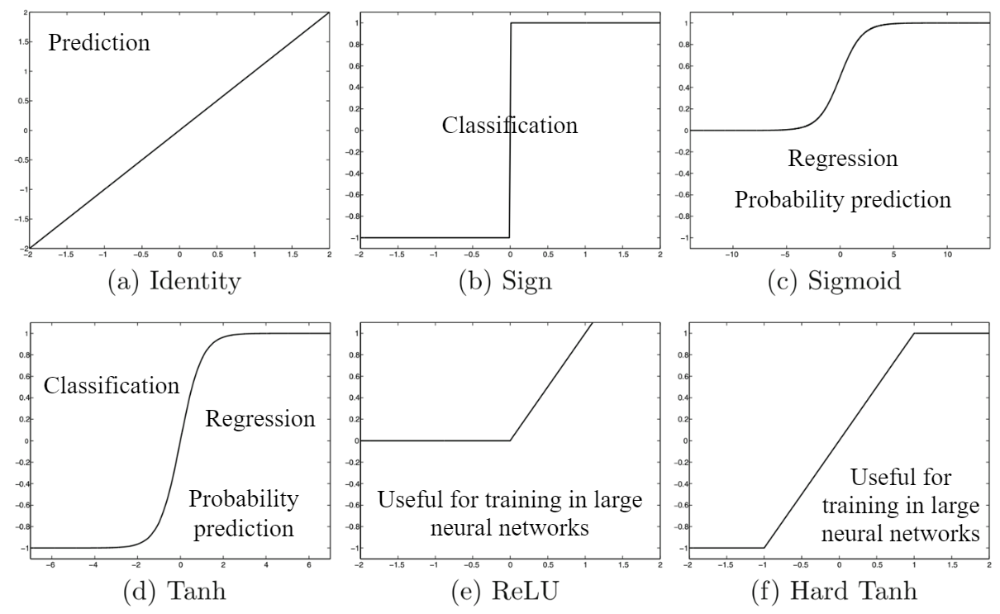
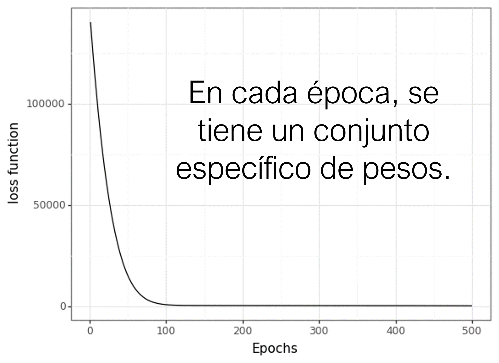
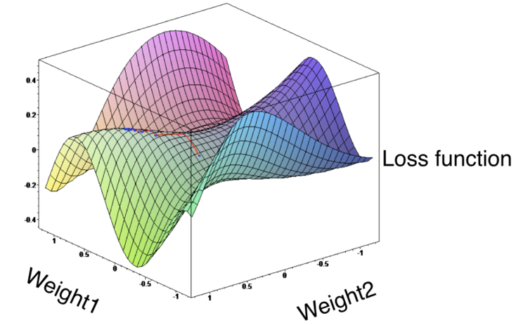

Deep Learning
Unidad 2: Perceptrones Multicapa (MLP) y Deep Learning
1 Redes Neuronales
Una red neuronal artificial, ANN por sus siglas en inglés artificial neural network modelan la relación entre un conjunto de señales de entrada y una señal de salida usando un modelo derivado desde nuestro entendimiento de cómo funciona un cerebro biológico ante estimulos externos.
Tal como un cerebro usa una red de células interconectadas llamadas neuronas, una red neuronal usa una red de neuronas artificiales o nodos para resolver problemas de aprendizaje.


La forma más común de representar la estructura de una red neuronal es mediante el uso de capas (layers), formadas a su vez por neuronas.
Cada neurona, realiza una operación sencilla y está conectada a las neuronas de la capa anterior y de la capa siguiente mediante pesos, cuya función es refular la información que se propaga de una neurona a otra.

Red neuronal artificial
Para facilitar la comprensión de la estructura de las redes, es útil representar una red equivalente a un modelo de regresión lineal:
\[y=w_1 x_1 +\dots+w_d x_d + b\]
Cada neurona de la capa de entrada representa elvalor de uno de los predictores.
Las flechas representan los coeficientes de regresión, que en términos de redes se llaman pesos, y la neurona de salida representa el valor predicho.
Para que esta representación equivalga a la ecuación de un modelo lineal, faltan dos cosas:
El sesgo (bias) del modelo
Las operaciones de multiplicación y suma que combinan el valor de los predictores con los pesos del modelo
Cada neurona de la capa intermedia tiene un valor de bias, pero suele omitirse en las representaciones gráficas.
En cuanto a las operaciones matemáticas, es el elemento clave que ocurre dentro de las neuronas y conviene verlo con detalle.
2 Neurona
La neurona es la unidad funcional de los modelos de redes. Dentro de cada neurona ocurren simplemente dos operaciones: la suma ponderada de sus entradas y la aplicación de una función de activación.
En la primera parte, se multiplica cada valor de entrada \(x_i\) por su peso asociado \(w_i\) y se suman junto con el sesgo. Este es el valor neto de entrada a la neurona. A continuación, este valor se pasa por una función, conocida como función de activación, que transforma el valor neto de entrada en un valor de salida.
Si bien el valor que llega a la neurona, siempre es una combinación lineal, gracias a la función de activación, se pueden generar salidas muy diversas. Es en la función de activación donde reside el potencial de los modelos de redes para aprender relaciones no lineales.
Neurona
Lo anterior es la noción intuitiva de las redes neuronales artificiales, en términos mátemáticos:
- El valor neto de entrada a una neurona es la suma de los valores que le llegan, ponderados por el peso de las conexiones, más el sesgo:
\[Input = \sum_{i=1}^{n} x_i w_i + b\]
- En lugar de utilizar la sumatoria, este operación usualmente se presenta como un producto matricial, donde \(X\) representa el vector de los valores de entrada y \(W\) el vector de pesos:
\[Input = XW + b\]
A este valor se le aplica una función de activación \(g\) que lo transforma en lo que se conoce como el valor de activación \(a\), que es lo que finalmente sale de la neurona.
\[a=g(Input)=g(XW+b)\]
Para la capa de entrada, donde únicamente se quiere incorporar el valor de los predictores, la función de activación es la unidad, es decir, sale lo mismo que entra.
En la capa de salida, la función de activación utilizada suele ser la identidad para problemas de regresión, mientras que en problemas de clasificación, se aplican otras funciones.
3 Función de activación
Las funciones de activación controlan en gran medida qué información se propaga desde una capa a la siguiente (forward propagation).
Estas funciones convierten el valor neto de entrada a la neurona (combinación de los input, pesos y sesgo) en un nuevo valor. Gracias a combinar funciones de activación no lineales con múltiples capas, los modelos de redes son capaces de aprender relaciones no lineales.
La gran mayoría de funciones de activación convierten el valor de entrada neto de la neurona en un valor dentro del rango \((0, 1)\) o \((-1, 1)\). Cuando el valor de activación de una neurona (salida de su función de activación) es cero, se dice que la neurona está inactiva, ya que no pasa ningún tipo de información a las siguientes neuronas.
3.1 Tipos de funciones de activación
Existen muchas funciones de activación utilizadas en la práctica, en lo que sigue mencionamos sólo algunas de ellas:
Sigmoide
Tangente hiperbólica
Rectified Linear Unit (ReLU)
Gaussian Error Linear Unit (GELU)
También hay otras como: función lineal, gaussiana, linear saturada, etc.
3.1.1 Sigmoide
La función sigmoide transforma valores en la recta real a valores en el rango \([0, 1]\):
\[sigmoid(x)=\dfrac{1}{1+\exp(-x)}\]
Sigmoid
Aunque la función de activación sigmoide se utilizó mucho en los inicios de los modelos de redes, en la actualidad, suele preferirse la función ReLU.
Un caso en el que la función de activación sigmoide sigue siendo la función utilizada por defecto es en las neuronas de la capa de salida de los modelos de clasificación binaria, ya que su salida puede interpretarse como probabilidad.
3.1.2 Tangente hiperbólica
La función de activación Tanh, se comporta de forma similar a la función sigmoide, pero su salida está acotada en el rango \([-1, 1]\):
\[\tanh(x)=\dfrac{1-\exp(-2x)}{1+\exp(-2x)}\]
Tangente hiperbólica
3.1.3 Rectified linear unit (ReLU)
La función de activación ReLu aplica una transformación no lineal muy simple, activa la neurona solo si el input está por encima de cero. Mientras el valor de entrada está por debajo de cero, el valor de salida es cero, pero cuando es superior, el valor de salida aumenta de forma lineal con el de entrada.
\[ReLU(x)=\max (0,x)\]
Rectified linear unit
De esta forma, la función de activación retiene únicamente los valores positivos y descarta los negativos dándoles una activación de cero.
ReLU es con diferencia la función de activación más empleada por sus buenos resultados en aplicaciones diversas. La razón de esto reside en el comportamiento de su derivada (gradiente), que es cero o constante.
3.1.4 Gaussian Error Linear Unit (GELU)
Se considera una mejora sobre las funciones de activación tradicionales como ReLU, debido a sus propiedades suaves y no lineales.
\[ GELU(x) = x \cdot \Phi (x)\] donde \(Phi(x)\) representa la CDF de la distribución normal estándar.
Gaussian Error Linear Unit
La GELU permite que las señales pasen a través de ella de manera similar a ReLU, pero con una transición más suave.
En lugar de cortar directamente en cero como en ReLU (donde todos los valores negativos se convierten en cero), la GELU modula la señal de manera que los valores pequeños se atenúan gradualmente hacia cero, y los valores positivos pasan con una transformación similar a la normal.
La función GELU se ha vuelto popular en modelos de deep learning avanzados, como modelos de procesamiento de lenguaje natural, GAN, Transformers, entre otros.
3.1.5 Funciones de activación y sus usos


Ejemplos de perceptrones y funciones de activación
4 Función de coste (loss function)
El objetivo del modelo es predecir un valor real o clasificar datos.
Existirán errores en la predicción.
Para la cuantificación de dicho error, utilizaremos una función de coste (o pérdida).
Definición
Dado un set de datos \(D(\mathbf{X}, \mathbf{Y})\), con \(N\) puntos y un modelo \(M\), una función general de coste está dada por
\[L(M) = \sum_{i=1}^{N} d\left[ f(x(i);M), y(i) \right]\]
con \(d[\cdot]\) la distancia entre los valores predichos y los verdaderos, \(x(i)\) los \(i\)-ésimos valores o clases predichas y \(y(i)\) los \(i\)-ésimos valores o clases verdaderas.
La función de coste (\(l\)), también llamada función de pérdida, loss function o cost function, es la encargada de cuantificar la distancia entre el valor real y el valor predicho por la red, en otras palabras, mide cuánto se equivoca la red al realizar predicciones.
En la mayoría de casos, la función de coste devuelve valores positivos. Cuanto más próximo a cero es el valor de coste, mejor son las predicciones de la red (menor error), siendo cero cuando las predicciones se corresponden exactamente con el valor real.
Distintos objetivos de un modelo.
La función de coste puede calcularse para una única observación o para un conjunto de datos (normalmente promediando el valor de todas las observaciones). Es el segundo caso el que se utiliza para dirigir el entrenamiento de los modelos.
Dependiendo del tipo de problema, regresión o clasificación, es necesario utilizar una función de coste u otra. En problemas de regresión, las más utilizadas son el error cuadrático medio y el error absoluto medio. En problemas de [clasificación suele emplearse la función log loss, también llamada logistic loss o cross-entropy loss]{orange}.
4.1 Funciones de coste para regresión
Las funciones de coste más comunes para regresión:
- Error cuadrático medio:
\[L_{sq}(w,b)=\dfrac{1}{n}\sum_{i=1}^{n}\left( \widehat{y}^{(i)}-y^{(i)}\right)^{2}\]
- Error medio absoluto:
\[L_{abs}(w,b)=\dfrac{1}{n}\sum_{i=1}^{n}|\widehat{y}^{(i)}-y^{(i)}|\]
4.1.1 Error cuadrático medio
El error cuadrático medio (mean squared error, MSE) es la función de coste más utilizada en problemas de regresión. Para una determinada observación \(i\), el error cuadrático se calcula como la diferencia al cuadrado entre el valor predicho \(\hat{y}\) y el valor real \(y\).
\[l_{sq}^{(i)}(w,b)=\left( \widehat{y}^{(i)}-y^{(i)}\right)^2\]
Las funciones de coste suelen escribirse con la notación \(l(w,b)\) para hacer referencia a que su valor depende de los pesos y el sesgo del modelo, ya que son estos los que determinan el valor de las predicciones \(\widehat{y}^{(i)}\).
Con frecuencia, esta función de coste se encuentra multiplicada por \(\dfrac{1}{2}\), esto es simplemente por conveniencia matemática para simplificar el cálculo de su derivada.
\[L_{sq}^{(i)}(w,b)=\dfrac{1}{2}\left( \widehat{y}^{(i)}-y^{(i)}\right)^2\]
Para cuantificar el error que comete el modelo en todo un conjunto de datos, por ejemplo los de entrenamiento, se promedia el error de todas las \(N\) observaciones.
\[L_{sq}(w,b)=\dfrac{1}{n}\sum_{i=1}^{n}l^{(i)}(w,b)=\dfrac{1}{n}\sum_{i=1}^{n}\left( \widehat{y}^{(i)}-y^{(i)}\right)^{2}\]
Cuando un modelo se entrena utilizando el error cuadrático medio como función de coste, está aprendiendo a predecir la media de la variable respuesta.
4.1.2 Error medio absoluto
El error medio absoluto (mean absolute error, MAE) consiste en promediar el error absoluto de las predicciones.
\[L(w,b)=\dfrac{1}{n}\sum_{i=1}^{n}|\widehat{y}^{(i)}-y^{(i)}|\]
El error medio absoluto es más robusto frente a outliers que el error cuadrático medio.
Esto significa que, el entrenamiento del modelo, se ve menos influenciado por datos anómalos que pueda haber en el conjunto de entrenamiento.
Cuando un modelo se entrena utilizando el error absoluto medio como función de coste, está aprendiendo a predecir la mediana de la variable respuesta.
4.2 Funciones de coste para clasificación
Las funciones de coste más comunes para problemas de clasificación:
- Entropia cruzada binaria (Binary crossentropy):
\[L_{bc}(M) = -\frac{1}{N} \sum_{i=1}^{N} \left[ y^{(i)} \cdot log(\hat{y}^{(i)}) + (1 - y^{(i)}) \cdot log(1 - \hat{y}^{(i)}) \right]\]
- Entropía cruzada categórica (Categorical crossentropy):
\[L_{bc}(M) = -\frac{1}{N} \sum_{i=1}^{N} \sum_{j=1}^{C} \left[ y^{(i,j)} \cdot log(\hat{y}^{(i,j)}) \right], \]
donde \(y^{(i,j)} =1\), si la clase de \(y^{(i,j)}\) es \(j\) y 0 en cualquier otro caso, \(\hat{y}^{(i,j)}\) es la probabilidad entregada por el modelo para que la \(i\)-ésima observación pertenezca a la \(j\)-ésima clase.
5 Múltiples capas
El modelo de red neuronal con una única capa (single-layer perceptron), aunque supuso un gran avance en el campo del machine learning, sólo es capaz de aprender patrones sencillos.
Para superar esta limitación, los investigadores descubrieron que, combinando múltiples capas ocultas, la red puede aprender relaciones mucho más complejas entre los predictores y la variable de respuesta.
A esta estructura se le conoce como perceptrón multicapa o multilayer perceptron (MLP), y puede considerarse como el primer modelo de deep learning.
La estructura de un perceptrón multicapa consta de varias capas ocultas. Cada neurona está conectada a todas las neuronas de la capa anterior y a las de la capa posterior.
Aunque no es estrictamente necesario, todas las neuronas que forman parte de una misma capa suelen emplear la misma función de activación.
Combinando múltiples capas ocultas y funciones de activación no lineales, los modelos de redes pueden aprender prácticamente cualquier patrón. De hecho, está demostrado que, con suficientes neuronas, un MLP es un aproximador universal para cualquier función.
Tarea Busque información sobre el Teorema de aproximación universal
perceptrón multicapa
6 Entrenamiento
El proceso de entrenamiento de una red neuronal consiste en ajustar el valor de los pesos y sesgo de tal forma que, las predicciones que se generen, tengan el menor error posible. Gracias a esto, el modelo es capaz de identificar qué predictores tienen mayor influencia y de qué forma están relacionados entre ellos y con la variable de respuesta.
La idea intuitiva de cómo entrenar una red neuronal es la siguiente:
Iniciar la red con valores aleatorios de los pesos y sesgo.
Para cada observación de entrenamiento, calcular el error que comete la red al hacer su predicción. Promediar los errores de todas las observaciones.
Identificar la responsabilidad que ha tenido cada peso y sesgo en el error de las predicciones.
Modificar ligeramente los pesos y sesgos de la red (de forma proporcional a su responsabilidad en el error) en la dirección correcta para que se reduzca el error.
Repetir los pasos 2, 3, 4 y 5 hasta que la red sea suficientemente buena.
Si bien, la idea parece sencilla, el alcanzar una forma de implementarla ha requerido la combinación de múltiples métodos matemáticos, en particular, backward y forward propagation
En el proceso de entrenamiento, se busca el mejor conjunto de parámetros para minimizar alguna de las funciones de coste o pérdida.
La verdadera forma de la función de pérdida sólo puede ser construída si se tuviesen datos infinitos. Al ser finita la cantidad de datos que se tiene, la función de pérdida obtenida no reflejará la verdadera forma de la función de pérdida.



Resultados de predicción de un modelo a través de las épocas
6.1 Backpropagation
Backpropagation es el algoritmo que permite cuantificar la influencia que tiene cada peso y bias en las predicciones de la red. Para conseguirlo, hace uso de la regla de la cadena para calcular el gradiente, que no es más que el vector formado por las derivadas parciales de una función.
En el caso de las redes, la derivada parcial del error respecto a un parámetro (peso o sesgo) mide cuánta responsabilidad ha tenido ese parámetro en el error cometido. Gracias a esto, se puede identificar qué pesos de la red hay que modificar para mejorarla. El siguiente paso necesario, es determinar cuánto y cómo modificarlos (optimización).
6.1.1 Prepocesamiento de variables
A la hora de entrenar modelos basados en redes neuronales, es necesario aplicar a los datos, al menos, dos tipos de transformaciones.
Binarización (one hot encoding) de las variables categóricas: La binarización consiste en crear nuevas variables dummy con cada uno de los niveles de las variables cualitativas. Este proceso es el mismo realizado en modelos lineales.
Estandarización y escalado de variables numéricas: Cuando los predictores son numéricos, la escala en la que se miden, así como la magnitud de su varianza pueden influir en gran medida en el modelo. Si no se igualan de alguna forma los predictores, aquellos que se midan en una escala mayor o que tengan más varianza dominarán el modelo aunque no sean los que más relación tienen con la variable respuesta. Para ello, en general centramos los datos, y estandarizamos o reescalamos entre 0 y 1.
7 Hiperparámetros
La gran “flexibilidad” que tienen las redes neuronales es un arma de doble filo. Por un lado, son capaces de generar modelos que aprenden relaciones muy complejas, sin embargo, sufren fácilmente el problema de sobreajuste (overfitting) lo que los incapacita al tratar de predecir nuevas observaciones.
La forma de minimizar este problema y conseguir modelos útiles pasa por configurar de forma adecuada sus hiperparámetros. Son muchos los hiperparámetros de un modelo basado en redes y su nomenclatura varía de unas implementaciones a otras, sin embargo, los de mayor impacto siempre están presentes:
Número y tamaño de capas
Learning rate
Algoritmo de optimización
Regularización
7.1 Número y tamaño de capas
La arquitectura de una red, el número de capas y el número de neuronas que forman parte de cada capa, determinan en gran medida la complejidad del modelo y con ello su potencial capacidad de aprendizaje.
La capa de entrada y salida son sencillas de establecer. La capa de entrada tiene tantas neuronas como predictores y la capa de salida tiene una neurona en problemas de regresión y tantas como clases en problemas de clasificación. En la mayoría de implementaciones, estos valores se establecen automáticamente en función del conjunto de entrenamiento. El usuario suele especificar únicamente el número de capas intermedias (ocultas) y el tamaño de las mismas.
Cuantas más neuronas y capas, mayor la complejidad de las relaciones que puede aprender el modelo. Sin embargo, dado que cada neurona está conectada por pesos al resto de neuronas de las capas adyacentes, el número de parámetros a aprender aumenta y con ello el tiempo de entrenamiento.
7.2 Learning rate
El learning rate o tasa de aprendizaje establece cuan rápido pueden cambiar los parámetros de un modelo a medida que se optimiza (aprende). Este hiperparámetro es uno de los más complicados de establecer, ya que depende mucho de los datos e interacciona con el resto de hiperparámetros. Si el learning rate es muy grande, el proceso de optimización puede ir saltando de una región a otra sin que el modelo sea capaz de aprender. Si por el contrario, el learning rate es muy pequeño, el proceso de entrenamiento puede tardar demasiado y no llegar a completarse. Algunas de las recomendaciones heurísticas basadas en prueba y error son:
Utilizar un learning rate lo más pequeño posible siempre y cuando el tiempo de entrenamiento no supere las limitaciones temporales disponibles.
No utilizar un valor constante de learning rate durante todo el proceso de entrenamiento. Por lo general, utilizar valores mayores al inicio y pequeños al final.
7.3 Algoritmo de optimización
El descenso de gradiente y el descenso de gradiente estocástico fueron de los primeros métodos de optimización utilizados para entrenar modelos de redes neuronales. Ambos utilizan directamente el gradiente para dirigir la optimización. Pronto se vio que esto genera problemas a medida que las redes aumentan de tamaño (neuronas y capas). En muchas regiones del espacio de búsqueda, el gradiente es muy próximo a cero, lo que hace que la optimización quede estancada. Para evitar este problema, se han desarrollado modificaciones del descenso de gradiente capaces de adaptar el learning rate en función del gradiente y subgradiente. De esta forma, el proceso de aprendizaje se ralentiza o acelera dependiendo de las características de la región del espacio de búsqueda en el que se encuentren. Aunque existen multitud de adaptaciones, suele recomendarse:
Para conjuntos de datos pequeños: l-bfgs (limited memory bfgs)
Para conjuntos de datos grandes: adam o rmsprop (root mean square propagation)
La elección del algoritmo de optimización puede tener un impacto notable en el aprendizaje de los modelos, sobre todo en deep learning.
7.4 Regularización
Los métodos de regularización tienen el objetivo de reducir el sobreajuste (overfitting) de los modelos. Un modelo con sobreajuste memoriza los datos de entrenamiento pero es incapaz de predecir correctamente nuevas observaciones.
Los modelos de redes neuronales pueden considerarse como modelos sobre parametrizados, por lo tanto, las estrategias de regularización son fundamentales. De entre las muchas que existen, destacan la regularización L1 y L2 (weight decay) y el dropout.
8 Referencias